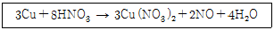
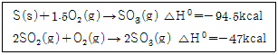
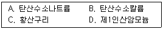
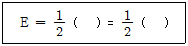
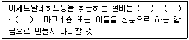

위험물산업기사 (2019-03-03 기출문제)
1과목: 일반화학
1. 기체상태의 염화수소는 어떤 화학결합으로 이루어진 화합물인가?
- 극성 공유결합
- 이온 결합
- 비극성 공유결합
- 배위 공유결합
(정답률: 68%)

2. 20%의 소금물을 전기분해하여 수산화나트륨 1몰을 얻는 데는 1A의 전류를 몇 시간 통해야 하는가?
- 13.4
- 26.8
- 53.6
- 104.2
(정답률: 60%)
3. 다음 반응식은 산화-환원 반응이다. 산화된 원자와 환원된 원자를 순서대로 옳게 표현한 것은?

- Cu, N
- N, H
- O, Cu
- N, Cu
(정답률: 75%)
4. 메틸알코올과 에틸알코올이 각각 다른 시험관에 들어있다. 이 두 가지를 구별할 수 있는 실험 방법은?
- 금속 나트륨을 넣어본다.
- 환원시켜 생성물을 비교하여 본다.
- KOH와 I2의 혼합 용액을 넣고 가열하여 본다.
- 산화시켜 나온 물질에 은거울 반응시켜 본다.
(정답률: 69%)
5. 다음 물질 중 벤젠 고리를 함유하고 있는 것은?
- 아세틸렌
- 아세톤
- 메탄
- 아닐린
(정답률: 81%)
6. 분자식이 같으면서도 구조가 다른 유기화합물을 무엇이라고 하는가?
- 이성질체
- 동소체
- 동위원소
- 방향족화합물
(정답률: 84%)
7. 다음 중 수용액의 pH가 가장 작은 것은?
- 0.01N HCl
- 0.1N HCl
- 0.01N CH3COOH
- 0.1N NaOH
(정답률: 82%)
8. 물 500g 중에 설탕(C12H22O11) 171g이 녹아 있는 설탕물의 몰랄농도(m)는?
- 2.0
- 1.5
- 1.0
- 0.5
(정답률: 70%)
9. 다음 중 불균일 혼합물은 어느 것인가?
- 공기
- 소금물
- 화강암
- 사이다
(정답률: 84%)
10. 다음은 원소의 원자번호와 원소기호를 표시한 것이다. 전이 원소만으로 나열된 것은?
- 20Ca, 21Sc, 22Ti
- 21Sc, 22Ti, 29Cu
- 26Fe, 30Zn, 38Sr
- 21Sc, 22Ti, 38Sr
(정답률: 68%)
11. 다음 중 동소체 관계가 아닌 것은?
- 적린과 황린
- 산소와 오존
- 물과 과산화수소
- 다이아몬드와 흑연
(정답률: 77%)
12. 다음 중 반응이 정반응으로 진행되는 것은?
- Pb2+ + Zn → Zn2+ + Pb
- I2 + 2Cl- → 2I- + Cl2
- 2Fe3+ + 3Cu → 3Cu2+ + 2Fe
- Mg2+ + Zn → Zn2+ + Mg
(정답률: 72%)
13. 물이 브뢴스테드산으로 작용한 것은?
- HCl + H2O ⇄ H3O+ + Cl-
- HCOOH + H2O ⇄ HCOO- + H3O+
- NH3 + H2O ⇄ NH4+ + OH-
- 3Fe + 4H2O ⇄ Fe3O4 + 4H2
(정답률: 71%)
14. 수산화칼슘에 염소가스를 흡수시켜 만드는 물질은?
- 표백분
- 수소화칼슘
- 염화수소
- 과산화칼슘
(정답률: 73%)
15. 질산칼륨 수용액 속에 소량의 염화나트륨이 불순물로 포함되어 있다. 용해도 차이를 이용하여 이 불순물을 제거하는 방법으로 가장 적당한 것은?
- 증류
- 막분리
- 재결정
- 전기분해
(정답률: 78%)
16. 할로겐화 수소의 결합에너지 크기를 비교하였을 때 옳게 표시한 것은?
- HI ＞ HBr ＞ HCl ＞ HF
- HBr ＞ HI ＞ HF ＞ HCl
- HF ＞ HCl ＞ HBr ＞ HI
- HCl ＞ HBr ＞ HF ＞ HI
(정답률: 75%)
17. 용매분자들이 반투막을 통해서 순수한 용매나 묽은 용액으로부터 좀 더 농도가 높은 용액 쪽으로 이동하는 알짜이동을 무엇이라 하는가?
- 총괄이동
- 등방성
- 국부이동
- 삼투
(정답률: 90%)
18. 다음 반응식을 이용하여 구한 SO2(g)의 몰 생성열은?

- -71kcal
- -47.5kcal
- 71kcal
- 47.5kcal
(정답률: 60%)
19. 27℃에서 부피가 2L인 고무풍선 속의 수소기체 압력이 1.23atm 이다. 이 풍선속에 몇 mole의 수소기체가 들어 있는가? (단, 이상기체라고 가정한다.)
- 0.01
- 0.⑤
- 0.10
- 0.25
(정답률: 71%)
20. 20℃에서 600mL의 부피를 차지하고 있는 기체를 압력의 변화 없이 온도를 40℃로 변화시키면 부피는 얼마로 변하겠는가?
- 300mL
- 641mL
- 836mL
- 1200mL
(정답률: 73%)
2과목: 화재예방과 소화방법
21. 클로로벤젠 300000L의 소요단위는 얼마인가?
- 20
- 30
- 200
- 300
(정답률: 79%)
22. 가연성 물질이 공기 중에서 연소할 때의 연소형태에 대한 설명으로 틀린 것은?
- 공기와 접촉하는 표면에서 연소가 일어나는 것을 표면연소라 한다.
- 유황의 연소는 표면연소이다.
- 산소공급원을 가진 물질 자체가 연소하는 것을 자기연소라 한다.
- TNT의 연소는 자기연소이다.
(정답률: 78%)
23. 할로겐화합물 소화약제가 전기화재에 사용될 수 있는 이유에 대한 다음 설명 중 가장 적합한 것은?
- 전기적으로 부도체이다.
- 액체의 유동성이 좋다.
- 탄산가스와 반응하여 포스겐가스를 만든다.
- 증기의 비중이 공기보다 작다.
(정답률: 85%)
24. 소화약제로서 물이 갖는 특성에 대한 설명으로 옳지 않은 것은?
- 유화효과(emulsification effect)도 기대할 수 있다.
- 증발잠열이 커서 기화 시 다량의 열을 제거한다.
- 기화팽창률이 커서 질식효과가 있다.
- 용융잠열이 커서 주수 시 냉각효과가 뛰어나다.
(정답률: 73%)
25. 위험물안전관리법령상 정전기를 유효하게 제거하기 위해서는 공기 중의 상대습도를 몇 % 이상되게 하여야 하는가?
- 40%
- 50%
- 60%
- 70%
(정답률: 90%)
26. 벤젠과 톨루엔의 공통점이 아닌 것은?
- 물에 녹지 않는다.
- 냄새가 없다.
- 휘발성 액체이다.
- 증기는 공기보다 무겁다.
(정답률: 75%)
27. 제6류 위험물인 질산에 대한 설명으로 틀린 것은?
- 강산이다.
- 물과 접촉시 발열한다.
- 불연성 물질이다.
- 열분해시 수소를 발생한다.
(정답률: 54%)
28. 제1종 분말소화약제가 1차 열분해되어 표준상태를 기준으로 2m3의 탄산가스가 생성되었다. 몇 kg의 탄산수소나트륨이 사용되었는가? (단, 나트륨의 원자량은 23이다.)
- 15
- 18.75
- 56.25
- 75
(정답률: 45%)
29. 다음 A~D 중 분말소화약제로만 나타낸 것은?

- A, B, C, D
- A, D
- A, B, C
- A, B, D
(정답률: 89%)
30. 이산화탄소소화설비의 소화약제 방출방식 중 전역방출방식 소화설비에 대한 설명으로 옳은 것은?
- 발화위험 및 연소위험이 적고 광대한 실내에서 특정장치나 기계만을 방호하는 방식
- 일정 방호구역 전체에 방출하는 경우 해당 부분의 구획을 밀폐하여 불연성가스를 방출하는 방식
- 일반적으로 개방되어 있는 대상물에 대하여 설치하는 방식
- 사람이 용이하게 소화활동을 할 수 있는 장소에서는 호스를 연장하여 소화활동을 행하는 방식
(정답률: 76%)
31. 알루미늄분의 연소 시 주수소화하면 위험한 이유를 옳게 설명한 것은?
- 물에 녹아 산이 된다.
- 물과 반응하여 유독가스가 발생한다.
- 물과 반응하여 수소가스가 발생한다.
- 물과 반응하여 산소가스가 발생한다.
(정답률: 76%)
32. 인화알루미늄의 화재시 주수소화를 하면 발생하는 가연성 기체는?
- 아세틸렌
- 메탄
- 포스겐
- 포스핀
(정답률: 73%)
33. 강화액 소화약제에 소화력을 향상시키기 위하여 첨가하는 물질로 옳은 것은?
- 탄산칼륨
- 질소
- 사염화탄소
- 아세틸렌
(정답률: 71%)
34. 일반적으로 고급알코올황산에스테르염을 기포제로 사용하며 냄새가 없는 황색의 액체로서 밀폐 또는 준밀폐 구조물의 화재 시 고팽창포로 사용하여 화재를 진압할 수 있는 포소화약제는?
- 단백포소화약제
- 합성계면활성제포소화약제
- 알코올형포소화약제
- 수성막포소화약제
(정답률: 74%)
35. 전기불꽃 에너지 공식에서 ( )에 알맞은 것은? (단, Q는 전기량, V는 방전전압, C는 전기용량을 나타낸다.)

- QV, CV
- QC, CV
- QV, CV2
- QC, QV2
(정답률: 84%)
36. 위험물제조소등의 스프링클러설비의 기준에 있어 개방형스프링클러헤드는 스프링클러헤드의 반사판으로부터 하방 및 수평방향으로 각각 몇 m의 공간을 보유하여야 하는가?
- 하방 0.3m, 수평방향 0.45m
- 하방 0.3m, 수평방향 0.3m
- 하방 0.45m, 수평방향 0.45m
- 하방 0.45m, 수평방향 0.3m
(정답률: 66%)
37. 적린과 오황화린의 공통 연소생성물은?
- SO2
- H2S
- P2O5
- H3PO4
(정답률: 76%)
38. 제1류 위험물 중 알칼리금속과산화물의 화재에 적응성이 있는 소화약제는?
- 인산염류분말
- 이산화탄소
- 탄산수소염류분말
- 할로겐화합물
(정답률: 67%)
39. 가연성 가스의 폭발 범위에 대한 일반적인 설명으로 틀린 것은?
- 가스의 온도가 높아지면 폭발 범위는 넓어진다.
- 폭발한계농도 이하에서 폭발성 혼합가스를 생성한다.
- 공기 중에서보다 산소 중에서 폭발 범위가 넓어진다.
- 가스압이 높아지면 하한값은 크게 변하지 않으나 상한값은 높아진다.
(정답률: 66%)
40. 위험물제조소등에 설치하는 포소화설비의 기준에 따르면 포헤드방식의 포헤드는 방호대상물의 표면적 1m2 당 방사량이 몇 L/min 이상의 비율로 계산한 양의 포수용액을 표준방사량으로 방사할 수 있도록 설치하여야 하는가?
- 3.5
- 4
- 6.5
- 9
(정답률: 57%)
3과목: 위험물의 성질과 취급
41. 동식물유류에 대한 설명으로 틀린 것은?
- 건성유는 자연발화의 위험성이 높다.
- 불포화도가 높을수록 요오드가가 크며 산화되기 쉽다.
- 요오드값이 130 이하인 것이 건성유이다.
- 1기압에서 인화점이 섭씨 250도 미만이다.
(정답률: 78%)
42. 과산화나트륨이 물과 반응할 때의 변화를 가장 옳게 설명한 것은?
- 산화나트륨과 수소를 발생한다.
- 물을 흡수하여 탄산나트륨이 된다.
- 산소를 방출하며 수산화나트륨이 된다.
- 서서히 물에 녹아 과산화나트륨의 안정한 수용액이 된다.
(정답률: 72%)
43. 다음 중 연소범위가 가장 넓은 위험물은?
- 휘발유
- 톨루엔
- 에틸알코올
- 디에틸에테르
(정답률: 73%)
44. 메틸에틸케톤의 취급 방법에 대한 설명으로 틀린 것은?
- 쉽게 연소하므로 화기 접근을 금한다.
- 직사광선을 피하고 통풍이 잘되는 곳에 저장한다.
- 탈지작용이 있으므로 피부에 접촉하지 않도록 주의한다.
- 유리 용기를 피하고 수지, 섬유소 등의 재질로 된 용기에 저장한다.
(정답률: 78%)
45. 유기과산화물에 대한 설명으로 틀린 것은?
- 소화방법으로는 질식소화가 가장 효과적이다.
- 벤조일퍼옥사이드, 메틸에틸케톤퍼옥사이드 등이 있다.
- 저장시 고온체나 화기의 접근을 피한다.
- 지정수량은 10kg이다.
(정답률: 56%)
46. 위험물안전관리법령상 시 · 도의 조례가 정하는 바에 따르면 관할소방서장의 승인을 받아 지정수량 이상의 위험물을 임시로 제조소등이 아닌 장소에서 취급할 때 며칠 이내의 기간 동안 취급할 수 있는가?
- 7일
- 30일
- 90일
- 180일
(정답률: 76%)
47. 다음 물질 중 인화점이 가장 낮은 것은?
- 톨루엔
- 아세톤
- 벤젠
- 디에틸에테르
(정답률: 72%)
48. 오황화린에 관한 설명으로 옳은 것은?
- 물과 반응하면 불연성기체가 발생된다.
- 담황색 결정으로서 흡습성과 조해성이 있다.
- P2S5로 표현되며 물에 녹지 않는다.
- 공기 중 상온에서 쉽게 자연발화 한다.
(정답률: 66%)
49. 물과 접촉하였을 때 에탄이 발생되는 물질은?
- CaC2
- (C2H5)3Al
- C6H3(NO2)3
- C2H5ONO2
(정답률: 64%)
50. 아염소산나트륨이 완전 열분해하였을 때 발생하는 기체는?
- 산소
- 염화수소
- 수소
- 포스겐
(정답률: 56%)
51. 위험물안전관리법령에서 정한 위험물의 운반에 대한 설명으로 옳은 것은?
- 위험물을 화물차량으로 운반하면 특별히 규제받지 않는다.
- 승용차량으로 위험물을 운반할 경우에만 운반의 규제를 받는다.
- 지정수량 이상의 위험물을 운반할 경우에만 운반의 규제를 받는다.
- 위험물을 운반할 경우 그 양의 다소를 불문하고 운반의 규제를 받는다.
(정답률: 77%)
52. 제6류 위험물의 취급 방법에 대한 설명 중 옳지 않은 것은?
- 가연성 물질과의 접촉을 피한다.
- 지정수량의 1/10 을 초과할 경우 제2류 위험물과의 혼재를 금한다.
- 피부와 접촉하지 않도록 주의한다.
- 위험물제조소에는 “화기엄금” 및 “물기엄금” 주의사항을 표시한 게시판을 반드시 설치하여야 한다.
(정답률: 76%)
53. 제2류 위험물과 제5류 위험물의 공통적인 성질은?
- 가연성 물질이다.
- 강한 산화제이다.
- 액체 물질이다.
- 산소를 함유한다.
(정답률: 69%)
54. 묽은 질산에 녹고, 비중이 약 2.7인 은백색 금속은?
- 아연분
- 마그네슘분
- 안티몬분
- 알루미늄분
(정답률: 75%)
55. 황린에 대한 설명으로 틀린 것은?
- 백색 또는 담황색의 고체이며, 증기는 독성이 있다.
- 물에는 녹지 않고 이황화탄소에는 녹는다.
- 공기 중에서 산화되어 오산화인이 된다.
- 녹는점이 적린과 비슷하다.
(정답률: 66%)
56. 다음은 위험물안전관리법령에서 정한 아세트 알데히드등을 취급하는 제조소의 특례에 관한 내용이다. ( )안에 해당하지 않는 물질은?

- Ag
- Hg
- Cu
- Fe
(정답률: 63%)
57. 위험물안전관리법령에 근거한 위험물 운반 및 수납시 주의사항에 대한 설명 중 틀린 것은?
- 위험물을 수납하는 용기는 위험물이 누설되지 않게 밀봉시켜야 한다.
- 온도 변화로 가스가 발생해 운반용기 안의 압력이 상승할 우려가 있는 경우(발생한 가스가 위험성이 있는 경우 제외)에는 가스 배출구가 설치된 운반용기에 수납할 수 있다.
- 액체 위험물은 운반용기 내용적의 98% 이하의 수납율로 수납하되 55℃의 온도에서 누설되지 아니하도록 충분한 공간 용적을 유지하도록 하여야 한다.
- 고체 위험물은 운반용기 내용적의 98% 이하의 수납율로 수납하여야 한다.
(정답률: 79%)
58. 인화칼슘이 물과 반응하여 발생하는 기체는?
- 포스겐
- 포스핀
- 메탄
- 이산화황
(정답률: 81%)
59. 위험물제조소의 배출설비 기준 중 국소방식의 경우 배출능력은 1시간당 배출장소 용적의 몇 배 이상으로 해야 하는가?
- 10배
- 20배
- 30배
- 40배
(정답률: 66%)
60. 제1류 위험물 중 무기과산화물 150kg, 질산염류 300kg, 중크롬산염류 3000kg을 저장하고 있다. 각각 지정수량의 배수의 총합은 얼마인가?
- 5
- 6
- 7
- 8
(정답률: 67%)